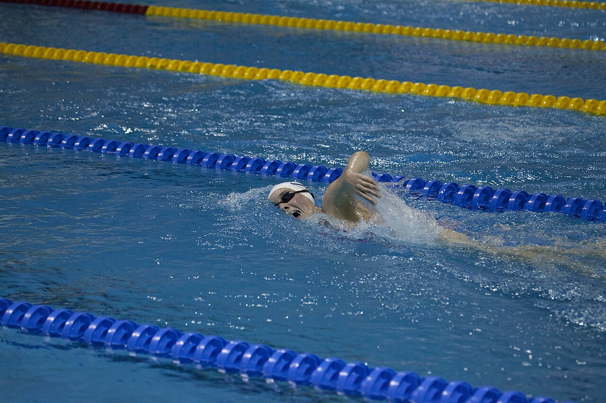
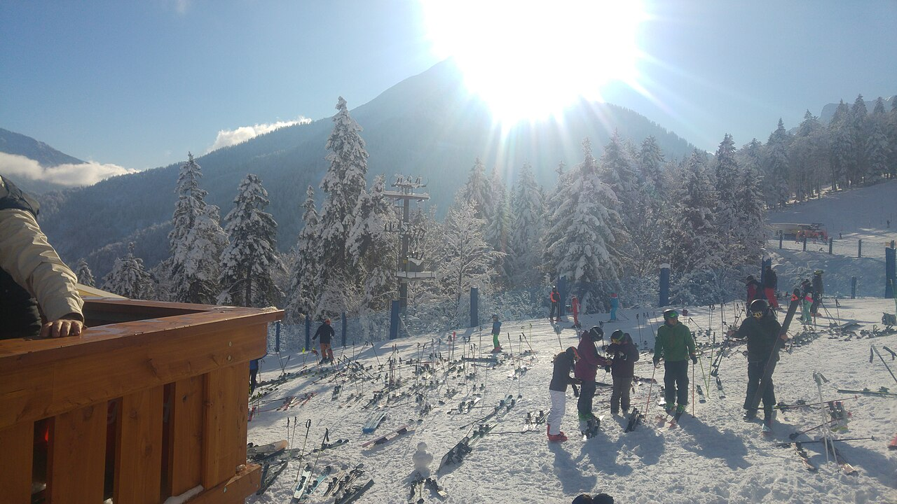

一、運動建議
🏊 游泳
對關節負擔小，最適合體重較重的人。每週 3 次以上很理想。

💪 加入基礎肌力訓練
深蹲、棒式、伏地挺身、弓箭步，每週 2–3 次，每次 20 分鐘。用自己的體重訓練就好，12 歲做這些很安全，對滑雪的穩定度和預防受傷特別有幫助。
🚶 日常多走路
搭捷運時走樓梯、多走路上學，這些都算數。
二、各項運動的安全提醒
🤿 潛水（最需要注意）
- 12–14 歲通常有深度限制（青少年開放水域潛水員約 18–21 公尺），一定要和合格教練或成人潛伴同行。
- 體脂較高的人，減壓病風險會稍微增加。要嚴格遵守免停留時間、慢慢上升、做安全停留，一天的潛水次數保守一點。
- 感冒、鼻塞、耳朵痛的時候不要潛水。
- 潛水前最好請醫師填寫潛水健康評估，特別是有氣喘、高血壓或心臟方面疑慮的話。
⛷️ 滑雪

- 一定要戴安全帽，膝蓋是最常受傷的部位，滑之前先暖身 10 分鐘。
- 高山上很容易脫水，也容易曬傷，要記得補水、擦防曬。
- 累了就休息，很多受傷都發生在「最後一趟」。
🏊 游泳
- 注意耳朵保持乾燥，預防外耳炎。
- 練習強度高的話，補水和補充營養要跟上。
本頁結論
- 游泳每週 3 次以上，加上每週 2–3 次自體重量肌力訓練
- 潛水一定要有教練或成人潛伴，遵守深度限制，潛水前做健康評估
- 滑雪一定戴安全帽、先暖身，累了就休息